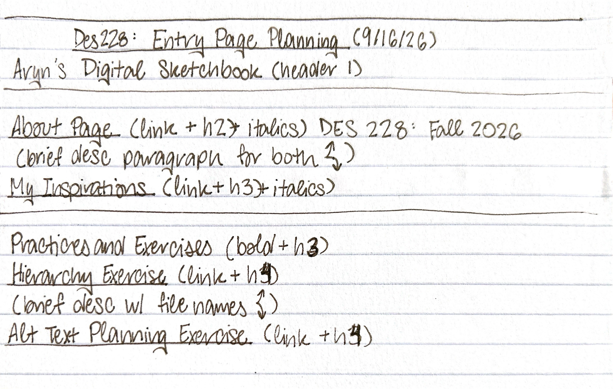
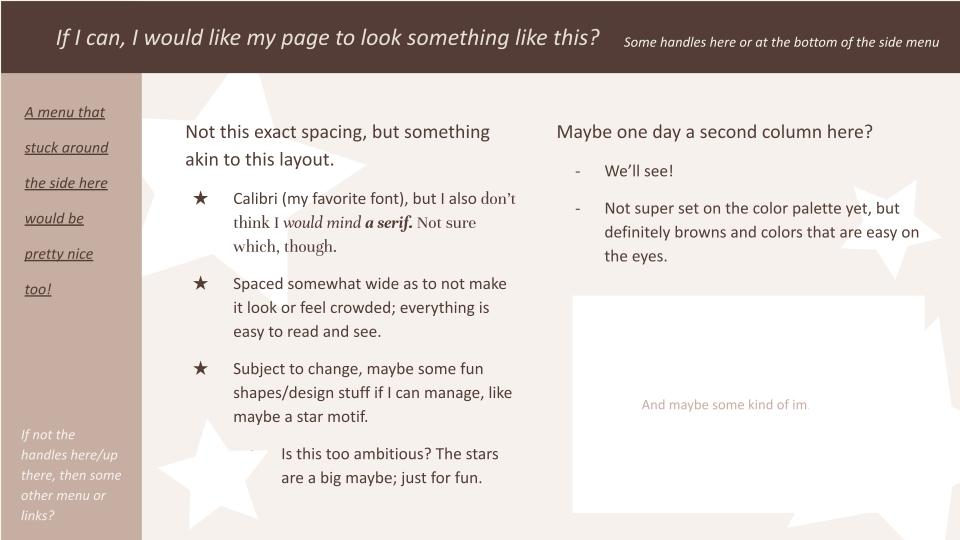

I managed to figure out how to link everything together on the entry page! I didn't end up needing to include the module numbers as those names were changed as they were put into the everything folder which is this interactive sketchbook folder. I'm glad everything got to working, though, and I'm excited to keep problem-solving stuff on this page in the future.

This was my simple idea for this page, brown ink on line paper 2026.

Here is a rough idea of what I'm thinking my home page could look like. I'm not sure how many links I will eventually end up with, but this is a super rough draft of what it could potentially look like. I'm not exactly sure how to do some of the design elements such as the stars, but I could do without them as well if it gets too complicated.
After a couple hours, I've messed around with how the site looks. Every. Page. I like the consistency a lot, but I also like the pages that I purposefully left minimally or completely unchanged, such as the Hierarchy exercise. When I first did that exercise, I did try my very best with the little knowledge I had to replicate exactly how the book was formatted. Although it isn't perfect (and it never would have been), I wanted to keep that integrity of my original intention with my limited knowledge at the time. The other page I left unchanged was the CSS Basics; it kind of just defeats the purpose of that assignment if I were to just get rid of all that CSS I did for that assignment, so I instead just opted for a little warning in the Home page description.
There are still things I definitely want to work on; mostly spacing. As far as right now, we've only mentioned the idea of complex spacing, and in this checkpoint I only scratched the surface of what margins, borders, and padding do. So, I'm looking forward to improving how the site looks with everything formatted in an organized way. For now, though, I would definitely call this an improvement.

My main idea for my website. I personally love using Google Slides so that's what I used to create my sketch. I already have the color palette down so far, but I'm excited to work towards this since I really want to clean up how my site looks.